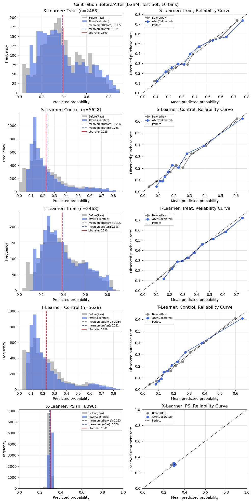
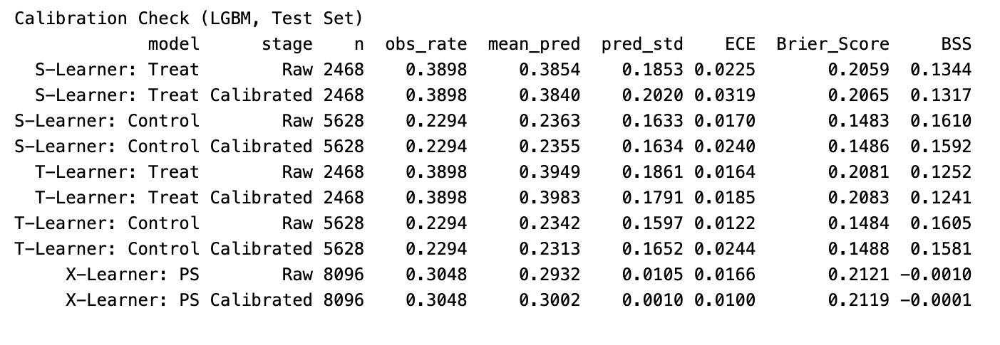
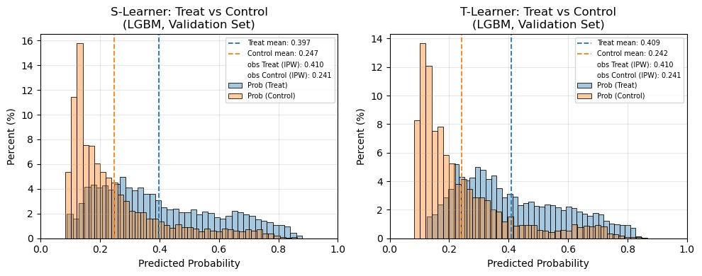
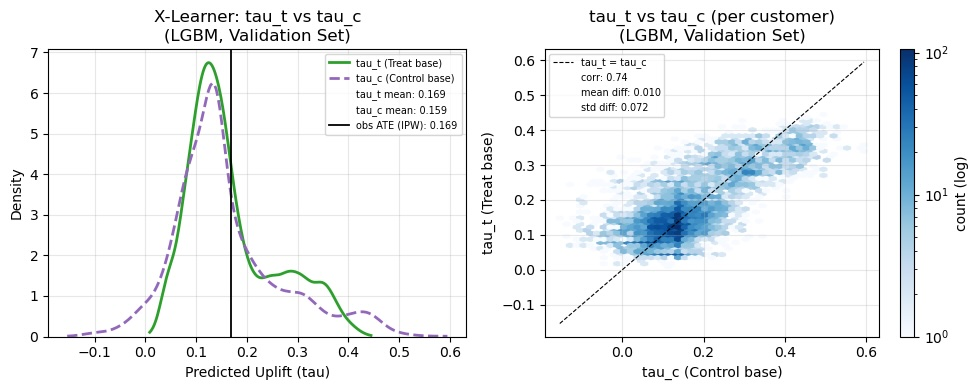
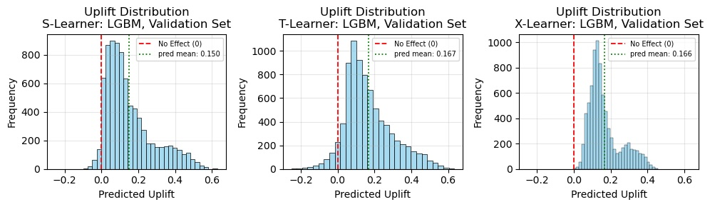
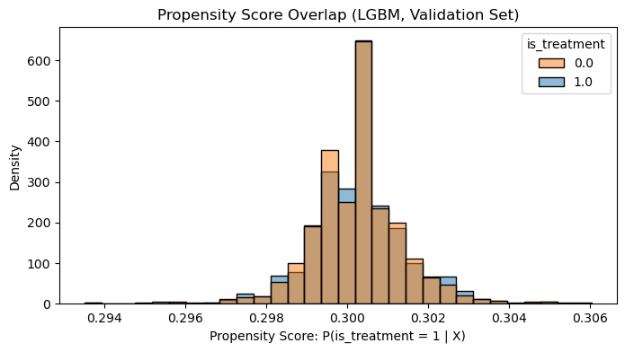
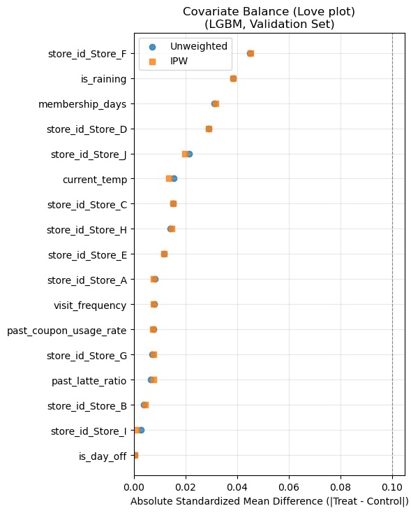
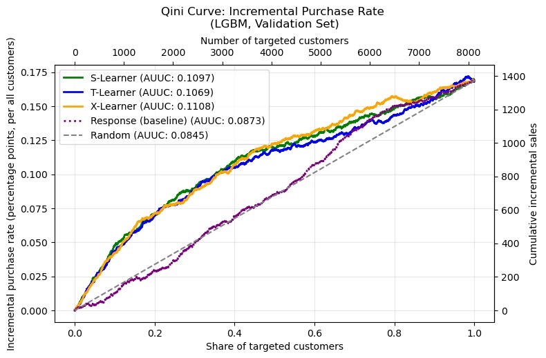

アップリフトモデリング（実践）
サンプル事例をもとにアップリフトモデリングの評価方法などを実践しながら解説。
サンプル事例
- カフェチェーンで「ラテ」の売上を伸ばすために、クーポンを配るキャンペーンを企画中。
- 全員に配る予算はない。クーポンをあげなくても買う「鉄板層」に配ると損をする。
- クーポンがないと買わなそうだが、クーポンがあると買いやすそうな人を優先して施策対象としたい。
実践内容
- アップリフトモデリングをLightGBMで、S,T,X-Learnerを同時進行する。
- X-Learnerでは、傾向スコアを用いて2つの処置効果推定値を重み付けして推定する。
- モデル評価時には、IPW（逆確率重み付け）による重みも利用する。
- 会計時に一定確率でクーポンを配布した、28日間の来店データを使用。1行は顧客の1回の来店に対応し、同じ顧客が複数日に来店する場合もある。
- データは日付で分割する（Train: 最初の2週間 / Val: 次の1週間 / Test: 最後の1週間）。
- Trainでモデルを学習し、ValでEarly Stoppingにより木の本数を決定した後、その本数でTrainを使って再学習する。分類器は、学習済みモデルを固定したうえでValを使って確率を較正する。
- Valはモデルの調整や選定にも使用するため、最終的な評価には使用せず、Testで評価する。
- モデルの健全性チェック、評価、分析と、モデルの解釈（PFI, SHAP, PDP, ICE）をおこなう。解釈工程についてはここでは触れない。
Python 3.11.15 OS macOS-27.0.1-arm64-arm-64bit pandas 3.0.2 numpy 2.4.3 matplotlib 3.10.9 seaborn 0.13.2 scikit-learn 1.8.0 shap 0.51.0 lightgbm 4.6.0
キャリブレーション
サンプル事例では、S-LearnerやT-Learnerで使用する分類モデルの予測確率などをキャリブレーションしている。
分類モデルのpredict_proba()が出力する確率は、実際の発生率（購入率など）と一致するとは限らない。予測確率が実際の発生率を適切に表しているかを確認し、必要に応じて確率を調整する。
- 例えば、モデルが1,000人ぶんの予測確率を出力する。
- そこから予測購入確率が80%前後のグループを100人取り出す。
- 100人のうち実際に80人程度が購入していれば、予測確率と実際の発生率はよく対応しているといえる。
- 実際の購入者が50人だった場合、予測確率は実際とズレている状態にある。
- このとき、モデルが出力した予測確率と実際の発生率が対応するように調整することをキャリブレーション（較正: こうせい）と呼ぶ。
なぜアップリフトモデリングで重要なのか
予測確率そのものを意思決定に使う場合には、通常の分類問題でもキャリブレーションを利用することはある。アップリフトモデリングでは、確率の適切さがより重要になりやすい。
S, T-Learnerでは、処置ありでの予測確率と処置なしでの予測確率の差からアップリフトを推定する。
- 例えばあるグループにおいて、処置ありの場合の購入確率を80%、処置なしの場合を50%と予測したとする。このとき、推定したアップリフトは30pointsとなる。
- 仮に実際の購入率は処置あり70%、処置なし60%だったとする。この場合、真のアップリフトは10pointsであり、推定値は20points過大になっている。
- つまり、処置あり/なしそれぞれの確率のズレがアップリフトの推定値にも影響しやすい。
だからといって、アップリフトモデリングでは必ずキャリブレーションしなければならないわけではない。キャリブレーションなしでも十分な順位付け性能が得られる場合はある。サンプル事例では分類モデルの予測確率を実際の発生率により対応させることを目的として、キャリブレーションをおこなう。
キャリブレーションの手法
分類器（モデル）とは別に、モデルが出力した確率やスコア（CVしやすさ、増分の大きさなど）を、実際の発生率に対応するように変換する較正器（キャリブレーター）を追加する。
キャリブレーションには複数の手法がある。ここでは、scikit-learnのCalibratedClassifierCVで利用できる手法のうち2つを取り上げる。
- Sigmoid（Platt Scaling）
- シグモイド関数を使って、モデルの出力を確率に変換する方法。
- 確率のズレが、シグモイド関数で十分に表現できる場合に適している（Isotonicよりも較正器の自由度が低い）。
- 較正用データが少ない場合にも使いやすい。
- Isotonic（等調回帰）
- データから単調な変換関数を学習する方法。
- 特定の関数の形を仮定せず、データに合わせて柔軟に確率を調整できる。
- 較正用データが少ないと過学習しやすいため、十分なデータを確保できる場合に検討する。
キャリブレーション用データの用意
分類器の学習に使ったデータを、そのままキャリブレーションに使わない。
分類器は、学習に使ったデータに対して、未知のデータに対する場合よりも良い予測を示すことがある。そのため、学習データに対する予測を使って較正器を学習すると、未知のデータでの予測確率を適切に較正できない可能性がある。原則として、分類器の学習には使っていないデータを用いて較正する。
FrozenEstimator（hold-out）
すでに学習済みの分類器を固定して、別データでキャリブレーションする方法。
base_model = lgb.LGBMClassifier(**{**params_clf, 'n_estimators': n_trees}).fit(X_tr, y_tr)
model = CalibratedClassifierCV(FrozenEstimator(base_model), method='sigmoid')
model.fit(X_va, y_va)
- Trainで分類器を学習（木の本数はValでのEarly Stoppingで決める）
- 学習済み分類器を
FrozenEstimatorで固定 - Valだけを使って較正器を作る
こうする理由
- まず分類器を学習させて、次に別のデータで予測確率だけを調整するという処理の構造が分かりやすい。
- クロスバリデーションでは、時点データの場合に「新しい期間で学習して、古い期間で較正する」ことが起きうる。
- Trainよりも時点が新しいValを較正に使うことで、過去のデータで学習した分類器を、より新しい期間のデータで較正するという時間の順序を保てる。
クロスバリデーション（cv=k）
学習データをk分割し、分割ごとの「学習に使っていない側」でキャリブレーションする方法（分類器の学習と較正器を分離する）。
- データが少なく、キャリブレーション用のデータを別に取るともったいない場合などには有用。
- どんな処理をしているかがコードを見ただけではわかりにくい。
base_model = lgb.LGBMClassifier(**params_clf)
model = CalibratedClassifierCV(base_model, cv=3, method='sigmoid', ensemble=False)
model.fit(X, y)
ensemble=True（デフォルト値）の場合
- 分類器を学習: cv=3なのでデータセットを3分割し、そのうち2つのfoldを使って分類器を学習。
- 較正用の予測を作成: 学習に使っていない残り1つのfoldについて、分類器で予測確率を出力する。
- 較正器を学習: 予測確率と実際の結果を使い、確率を調整するための変換関数を学習。
- これを3foldぶん繰り返し、3組の「分類器＋較正器」を作る。
- 予測時には、3組のモデルがそれぞれ出力した予測確率を平均する。
3-foldの場合、予測時には3組の「分類器＋較正器」の予測確率を平均する。複数のモデルを組み合わせることで、予測性能や確率の安定性が改善する場合がある。一方、複数の分類器を学習するため計算量が増える。
ensemble=Falseの場合
- データセットを3分割し、各foldについて、残りのデータで学習した分類器から予測確率を得る。
- すべてのfoldの予測確率を集め、実際の発生結果と組み合わせて較正器を1つ学習する。
- 全データを使って、改めて分類器を学習。
- 全データで学習した分類器と、手順2で学習させた較正器を組み合わせて使用する。
3foldなら3回のクロスバリデーションをおこなったうえで、1つの「分類器＋較正器」が作られ、予測時にはこれのみを使用する。そのため、ensemble=Trueよりも計算量やモデルサイズを抑えやすい。
ただし、較正器の学習に使った予測が、全データで再学習した分類器の予測と完全に同じ性質を持つとは限らない。全データで学習させた分類器は、各foldで学習させた分類器より多くのデータを使っているため。
キャリブレーションの注意点
- 分類モデルの識別能力や順位付け能力を直接改善することを目的とした処理ではない。
- 予測確率と実際の発生率の対応を整える処理であり、モデルの評価指標（QiniやAUUC）を必ず改善するわけではない。
- 時系列データの順序を守りたい場合は、学習データよりも新しい期間のデータを較正に使う方法などを検討する（クロスバリデーション使用時は、データの時間的な順序を考慮した分割方法を選ぶ）。
- キャリブレーション実施時は、予測確率と実際の発生率がどの程度対応しているか確認する（較正器を適用しただけで、確率が適切に較正されたとは判断できない）。
アップリフトの取得
モデルのチェックや評価、分析をするために、予測値などを取得しておく。サンプル事例では各Learnerによる予測値を元のデータセットとともにdataframe化している。
| Learner | カラム名 | 意味 |
|---|---|---|
| S-Learner | prob_t_s | 処置した場合の購入確率 |
| prob_c_s | 処置しなかった場合の購入確率 | |
| score_s | CATEの推定値（処置による購入確率の差。0.10なら10points差に相当） | |
| T-Learner | prob_t_t | 処置した場合の購入確率 |
| prob_c_t | 処置しなかった場合の購入確率 | |
| score_t | CATEの推定値（処置による購入確率の差） | |
| X-Learner | tau_t_x | 処置群の疑似ITEから学習させたCATEの推定値 |
| tau_c_x | 対照群の疑似ITEから学習させたCATEの推定値 | |
| score_x | tau_t_xとtau_c_xを傾向スコアで統合したCATEの推定値（処置による購入確率の差） | |
| propensity_score | 傾向スコア（処置を受ける確率の推定値） | |
| ipw_weight | 傾向スコアから計算したIPW重み |
Sanity
推定結果そのものの健全性をチェックする
アップリフトは個人ごとの正解を直接観測できない。そのためモデルを評価する前に、アップリフトの元になっている予測値そのものが妥当そうかを確認する。ここでは以下を見る。
- 予測確率と実際の発生率がどの程度対応しているか（キャリブレーション）
- 予測値の分布が極端になってないか
- 処置群と対照群の比較可能性が確保されているか（傾向スコアの重なり）
- 処置群と対照群で共変量の分布がどの程度そろっているか（共変量バランス）
キャリブレーション前後
モデルが出力した予測確率と実際の発生率の対応関係を、キャリブレーション前後で比較する。
単純化したイメージとしては、
- キャリブレーション前の、予測確率と実際の発生率の差
- キャリブレーション後の、予測確率と実際の発生率の差
後者で差が縮まっていれば望ましい状態に近づいたといえる。ただし、後述するいろいろな視点・指標を確認し、ひとつの結果だけを拠り所にしない。
サンプル事例では購入確率モデル4つ、傾向スコアモデル1つ、計5つについて確認する。
購入確率モデル
- 予測した購入確率と実際の購入率が対応しているか。
- 反実仮想（処置群の人を処置なしと仮定して予測した結果など）では実際の購入データは存在しないため、処置群/対照群に分けて、キャリブレーション前後で比較する。
- S-Learner（
model_s）の処置群 - S-Learner（
model_s）の対照群 - T-Learner（
model_t）の処置群 - T-Learner（
model_c）の対照群
- S-Learner（
傾向スコアモデル（g）
- 予測した処置確率と実際の処置率が対応しているか。
- 実際の処置データは全員ぶんあるため、一度に比較する。
例えば傾向スコア0.2前後と予測されたグループで、実際は50%(0.5)の人が処置を受けていたとする。
- IPW重みの予測値は、処置群5 対照群1.25だが、実際はどちらも2前後。
- 傾向スコアの予測がズレているとIPWによる重み付けが不適切になり、処置効果の推定に影響してくる。
IPWを用いる場合、傾向スコアの推定が適切であることは重要。とはいえ傾向スコアのキャリブレーションが良好でも、（傾向スコアの重なりや共変量バランスなども影響するため）因果効果の推定が正しいと保証されるわけではない。
サンプル事例ではValを使って較正器を学習している。Valで較正前後を比較すると、較正器の学習に使ったデータで評価することになり、未知データでの効果を適切に確認できない可能性がある。よって較正に使っていないTestで比較する。


予測確率の分布
キャリブレーションによって、予測確率の分布がどのように変化したかを見ておく。変化の仕方はさまざまなので、キャリブレーションの良否を判断するのではなく、全体的な変化を把握するための視点の一つ。
見方の例
- 較正前は予測値が0や1付近に集中していた（絶対に買わない/買うとモデルが極端な予測をしていた）分布だったとする。
- だが現実世界では、購入行動のような人間の気まぐれに左右されやすい出来事が、確実に発生することはそうないし、断定的に予測することも困難なことが多い。
- 較正後に極端な予測が減りマイルドな分布になっていれば、キャリブレーションによって現実的な確率に近づいた、すなわち予測と実際の対応関係が改善したという解釈は成り立ちそう。
※あくまで一例でありこのケースが多いわけではない。また同じ状況ならキャリブレーションがうまくいったという意味ではないし、違う状況ならダメだったという意味でもない。
予測確率平均と実際の発生率平均
キャリブレーションによって、予測確率の平均（mean_pred）が実際の発生率（obs_rate）に近づいているかを見ておく。
- 較正前の平均予測確率が実際の発生率から離れていた場合、較正後に差が縮まっていれば、「平均的には」対応関係が改善したといえる。
- 予測確率の標準偏差（
pred_std）の変化の仕方はさまざま（バラツキは縮小することも拡大することもあるため良否判断とはしない）。
信頼性曲線: Reliability Curve
予測確率をいくつかの区間（bin）に分け、各binで平均予測確率と実際の発生率のズレをプロットして、キャリブレーション前後で比較する。
- キャリブレーションを視覚的に確認する中心的な指標。
- 較正前の曲線が対角線から離れていた場合、較正後に対角線に近づいていれば、「全般的には」対応関係が改善したといえる。
- bin単位でのズレを表している（顧客ごとの予測確率の適切さや顧客間の違いを捉える指標ではない）。
- binの分け方やbin数によって見え方は変わる（後述のECEと条件をそろえる）。
- 各binの件数が少ない場合は、実際の発生率は不確かな推定になるため、おおまかな傾向把握にとどめる。
グラフの見方（横軸に予測、縦軸に実際）
- 対角線に近い → 予測と実際が近い（望ましい状態）
- 対角線より下 → 予測を高く出しすぎ（過大評価）
- 対角線より上 → 予測を低く出しすぎ（過小評価）
binの分け方
- 等幅と等頻度がある。 strategy='uniform' or 'quantile'
- サンプル事例では予測確率が低い値に寄るため、各binで人数が等しくなる等頻度を使用。
較正後のほうが悪化していた場合
- 件数が少ないことによるブレ
- Val（較正器学習用）とTest（較正器評価用）で、トレンドや周期性などが異なる
- キャリブレーションのmethod（Sigmoid, Isotonic）が合ってない
- 較正器がValに適合しすぎた、などが考えられる
処置割り当てがランダムの場合
- 傾向スコアモデルでは予測確率がほぼ一定になるのが自然。
- 信頼性曲線の点は集中しやすいため、対角線との関係性ではなく、予測確率の平均やバラツキ、実際の処置率との対応を確認する。
ECE: Expected Calibration Error（期待較正誤差）
予測確率と実際の発生率のズレを、数値で見ておく。
- 信頼性曲線におけるbinごとのズレを、各binの件数で重み付けして平均して絶対値をとることで、1つの数値に要約したような指標。
- bin単位でのズレを表している（顧客ごとの予測確率の適切さや顧客間の違いを捉える指標ではない）。
- binの分け方やbin数によって見え方は変わる（前述の信頼性曲線と条件をそろえる）。
見方
- 予測確率も実際の発生率も0〜1なので、その差の絶対値は0〜1の値を取る。
- ECEが小さい → 予測確率と実際の発生率が全体として近い
- ECEが大きい → 予測確率と実際の発生率にズレがある
binの分け方
- 等幅と等頻度がある。
- サンプル事例では購入確率が低い値に寄るため、人数が等しくなる等頻度を使用（自作関数内でpd.qcutしている）。
ECE注意点
- bin内のズレを集約するぶん、異なるbinでの過大予測と過小予測が打ち消し合うこともある。
- 実際の発生率が低い場合や、ほぼ全員を平均購入率で予測するモデルなどの場合は、ECEが小さくなりやすい。
- つまり打ち消し合う可能性やデータ特性などからして、ECEが小さければ較正がうまくいっているとは限らない。
Brier Score / BSS
キャリブレーションによって、予測確率の全体的な品質が改善したかを見ておく。
Brier Score
- 予測確率と実際（発生有無の0/1）との差を二乗して平均した指標。
- 0が理想。値が小さいほどよい（予測が実際に近い）。
BSS: Brier Skill Score
- Brier Scoreを基準モデル（全員一律で実際の発生率平均と予測した場合のBrier Score）と比較し、どの程度改善したかを表す指標。
- 1に近いほどよい。0なら基準モデルと同等、マイナスなら基準モデルより悪い。
- Brier Scoreは発生率の水準によって値が変わりやすいため、基準モデルに対する「相対的な改善度」を確認するならこちらの方が向いている。
もともとは、予測確率と実際の結果を照らし合わせて、確率予測が実際の結果をどの程度捉えているかを評価する、予測確率の良し悪しを総合的に採点するために作られた（天気予報の分野でBrier Scoreが考案され、発展形でBSSが登場）。
Brier Scoreは、予測確率と実際の発生率との対応（信頼性曲線などが表すもの）だけでなく、発生有無（購入しやすい人と購入しにくい人）をどの程度区別できているかというモデルの分解能力も反映している。
Brier Score = 不確実性(uncertainty) + 信頼性(reliability) - 分解能(resolution)
- 不確実性: 平均発生率 * (1 - 平均発生率) データそのもので決まりモデルでは変えられない。
- 信頼性: 予測確率と実際のズレ。小さいほど良い。
- 分解能: binごとの実際の発生率が、全体での平均発生率からどれだけ離れているか。すなわち購入しやすい人としにくい人を予測が区別できているかを表す。大きいほど良いので引き算。
つまりBrier Scoreが改善（値が小さくなった）したからといって、予測確率と実際の発生率の対応関係が改善したとは限らない。
Brier Score, BSSは、キャリブレーションによる予測確率全体への影響を補足的に捉えるために使うのがよい（予測確率と実際の発生率の対応関係が改善しているかは信頼性曲線やECEで確認する）。
ここまでは、実際に結果を観測できるデータについて、キャリブレーションによって予測確率が適切になったかの確認。
次からは、反実仮想も含めた全データを対象に（較正後を所与として）、予測値の分布や平均、変動などを、処置した場合/しなかった場合を対比させながら確認していく。
予測値の分布
モデルの出力した予測値の分布や水準に不自然な点がないかを確認する。
分布に極端な偏りがないかを把握することで、モデル作成や予測値の導出に不具合が生じていないかを確認することを企図している。
分布の偏りの一例
- 予測購入確率が1付近に極端に集中している
- 予測値が少数の値に集中しており、顧客間の違いがほとんど表れていない
- アップリフトが極端な正負の値に偏っている
このような場合、データリーケージやモデルの設定、予測の過度な確信、推定の不安定さなどが考えられる。ただし分布だけで決めつけない（実際のデータや評価結果も確認する）。
一方で、極端な偏りがないことが処置効果の推定の正しさを保証するわけでもない。
またLearner間や処置群/対照群での分布の違いは、良否を判断するのではなく、各手法の特徴や推定の傾向を把握するために見る。
S,T-Learnerの分布
予測購入確率の分布を、全員に処置した場合（prob_t）と、全員に処置しなかった場合（prob_c）別にプロットする。
- S-Learner: 1つのモデルに処置の有無を入力して得た値
- T-Learner: 処置群/対照群で別々のモデルを作って得た値
- 最終的なアップリフトの前段階の予測値なので、ここでは予測結果の特徴や不安定さの把握が目的
見方の一例
- 分布の形状
- 実際の購入率が低い場合、予測購入確率が低い値に偏ること自体は異常ではない。
- 顧客間の予測値の違いがほとんどない場合は、特徴量やモデルの設定などが、購入確率の違いを十分に捉えられていない可能性がある。
- prob_tとprob_c
- 処置の有無によって予測購入確率がどのように変化しているか。
prob_tの平均がprob_cの平均より高ければ、平均的には処置によって購入確率が上昇すると予測している。- 処置がランダム割り当ての場合は、期待値（各条件下の平均購入確率の推定値）を、処置群/対照群の実際の購入率（obs）と比較することで、予測が実際と大きく乖離していないか。

X-Learnerの分布
擬似ITEから推定した処置効果を、顧客単位でプロットする。
tau_tとtau_cは、処置群/対照群それぞれのデータで構築した疑似ITEから学習した、処置効果の推定値。同じ顧客の処置効果をそれぞれに推定しているため、顧客ごとの値を比較することで、推定結果の一致度や不安定さを確認する。
tau_tとtau_cの分布をKDEで重ねてプロット。- 顧客ごとの
tau_tとtau_cをhexbinでプロットし、相関係数、差の平均、差の標準偏差も算出する。 - 最終的なアップリフトの前段階の予測値なので、ここでは予測結果の特徴や不安定さの把握が目的
hexbin: データ（点）が多いと散布図では見にくいので、ハニカム（六角形）のグリッドで区切って「濃淡（件数）」で表現するグラフ。
見方
- 分布の形状が似ていれば、2つの回帰が似た効果を推定している。
- 相関が弱い場合や対角線から大きく外れる場合は、2つの推定結果に違いがあることを示す（どちらの推定値が正しいかは判断できない）。
- 差の平均は2つの推定値の系統的なズレ、差の標準偏差は顧客ごとのズレのバラツキを表す。
- ズレが大きい場合は、処置群/対照群のデータ量や特徴量の分布などを確認し、推定が不安定になっていないかを調べる。

S,T,X-Learnerのアップリフト
- S,T-Learner:
prob_t-prob_cから算出 - X-Learner:
tau_tとtau_cを傾向スコアで重み付けして算出
見方
- プラスのアップリフトが多い場合は、処置によって購入確率が上がると予測された顧客が多いことを示す（実際に効果がある顧客が多いとは限らない）。
- マイナスのアップリフトは、処置によって購入確率が下がると予測された顧客のこと。実際の負の効果（処置すると買わない）の表れ、あるいは推定誤差による可能性もある。
- 期待値と実際のATE推定値を比較し、平均的な効果が大きく乖離していないか確認する。
- 期待値以外に、標準偏差、分位点、負の割合などからも分布の特徴を把握する。
各Learnerの傾向
- おおまかな特徴であり、必ずそうなるわけではない。
- 分布の広がりが大きい＝選別性能が高いとは限らない（ノイズでも広がる）。
- 分布が広いから悪い、狭いから良いわけでもない。
| Learner | 分布に関して考えられる傾向 | 確認したいこと |
|---|---|---|
| S-Learner | 処置効果を十分捉えきれずに0近辺に縮む場合がある | 過度に0付近に集中していないか |
| T-Learner | 2つのモデルの予測誤差が差分に反映されて分布が広がる場合がある | 極端な正負の値が多くないか |
| X-Learner | 疑似ITEを学習するぶんT-Learnerとは異なる。分布が縮む場合もある | 推定値の範囲や分布が不自然でないか |

傾向スコアの重なり
傾向スコアの分布の重なり（overlap）を確認する。
傾向スコアモデル（g）のpredict_proba()から、処置を受ける確率を取り出し、処置群/対照群別に傾向スコア（PS）の分布をプロットする。2群の分布がどの程度重なっているかを確認することで、似たような特徴を持つ顧客について、処置群と対照群を比較できるだけのデータがあるかを把握する。X-LearnerやIPWを含む因果効果推定で重要な診断のひとつ。

2群の分布が十分に重なっている場合
- 似たようなPSの顧客が、処置群/対照群の両方に存在する。
- そのため、観測された特徴が近い顧客同士を比較できる可能性があり、因果効果を推定するうえで望ましい状態（重なりがあることだけで因果推定の妥当性が保証されるわけではない）。
- サンプル事例ではPSをX-Learnerのアップリフト算出とIPWに用いているため、重なりの程度はそれぞれの推定に影響する。
2群の分布の重なりが小さい場合
- 特定の顧客属性によって処置の有無がほぼ決まっており、似たようなPSの顧客が両群に十分存在しない可能性がある。
- そのような顧客では処置群と対照群の結果を直接比較することが難しく、因果効果の推定が不安定になりやすい。
重なりが小さいと何が問題か？
- 例えば、ある店舗では全員にクーポンを配布し、別の店舗では誰にも配布していないとする。
- 店舗という特徴量だけで処置の有無をほぼ予測できてしまう。
- そしてクーポンを配布した店舗には対照群のデータが、配布しなかった店舗には処置群のデータがほとんど存在しない状態にある。
- このような店舗の顧客については、処置をした場合としなかった場合の結果を観測データから直接比較することが難しく、モデルによる外挿に頼りやすくなる。
- X-Learnerでは処置群/対照群それぞれのデータから処置効果を推定するため、データが不足している領域では推定が不安定になりやすい。IPWにおいてもPSが0や1に近い顧客の重みが大きくなり、推定の分散が増える可能性がある。
※重なりが小さいことだけで、X-Learnerの推定が必ず悪くなるとは限らない。X-Learnerは、処置群と対照群の件数が異なる場合などにも有効なことがある。ただし、処置群/対照群のどちらかがほとんど存在しない領域では、信頼できる効果推定が難しくなりやすい。
感覚的な判断を補う
分布をプロットするだけでは感覚的な判断になりがちなので、定量情報を見ておく。
- しきい値を決めて、極端なPSの件数をカウントする。
- 例えば、PSが0.05未満または0.95超の顧客がどの程度いるかを見る。
- しきい値はデータや推定目的に応じて設定する。
- モデル
gのAUC算出。処置有無が特徴量からどの程度予測できるかを把握するための目安。- 0.5前後なら、モデルは特徴量から処置の有無をほとんど識別できていない（望ましい状態）。ただし、これだけで共変量バランスがよいとは判断できない。
- 0.5から大きく離れるなら、処置の有無が特徴量から予測しやすい可能性がある。特にAUCが高い場合は、処置の割り当てが特徴量に依存していないか、PSの分布や共変量バランスも確認する。
共変量バランス
傾向スコアを用いた重み付け（IPW）などの共変量調整をおこなっている場合は、共変量バランスを確認する。共変量調整の前後で、ASMDなどの指標を比較し、Love plotなどで可視化する。
※共変量バランス: 処置群と対照群で、共変量（顧客属性や過去の購入回数などの特徴量）の分布がどの程度そろっているかを表す。
※共変量調整: 処置群と対照群の共変量バランスを改善するための手続き。傾向スコアを用いた重み付け（IPWなど）、マッチング、層別解析などの方法がある。
ASMD: Absolute Standardized Mean Difference
- 標準化平均差（SMD）の絶対値。共変量バランスを測る指標の一つ。
- 値が小さいほど、処置群と対照群の差が小さい。
- 数値型の特徴量では、処置群と対照群の平均値の差を、2群の標準偏差をまとめた値（pooled SD）で割り、絶対値を取る。調整後は、重み付けなどを反映した統計量を用いて計算する。
- サンプル事例では、カテゴリ変数はone-hot化し、カテゴリごとに割合の差を標準化している。
ASMDの目安
- ASMD < 0.10 → おおむねバランスが取れているとみなす目安。
- ASMD ≥ 0.10 → 共変量の偏りが残っていないか確認する。
※0.10は一般的に使われる目安であり、絶対的な基準ではない。
Love plot
- 特徴量ごとに、共変量調整前と調整後のASMDをプロットしたグラフ。
- 調整前後で共変量バランスが改善したか、調整後に偏りが残っていないかを確認する。
見方
- 調整前後でASMDがどの程度変化したかを見る。調整後にASMDが小さくなっていれば、その共変量のバランスが改善したと解釈できる。0.1未満かどうかは、残っている偏りを確認するための目安として使う。
- 調整後もASMDが目安を超えている場合は、共変量の偏りが残っている。傾向スコアモデルの見直しや、重み付け方法の検討が必要になる場合がある。
- 調整後にASMDが悪化する特徴量がある場合は、PSの分布や重みの大きさも確認し、極端な重みが生じていないかを調べる。
- 処置割り当てがランダムな場合は、調整前から共変量バランスが比較的よく、調整後も大きく変化しないことが期待される。ただし件数が少ない場合などは偶然の偏りが生じることがある。
- ランダム割り当てでも、件数や共変量の性質を踏まえて判断する。ASMDの値だけでなく、共変量の分布や割り当て方法も確認する。
※共変量バランスが改善しても、未観測の交絡などが残っている可能性があるため、それだけで因果効果を正しく推定できると保証されるわけではない。

Evaluation
モデルの選別性能を評価する
アップリフトは個人ごとの正解を直接観測できないため、処置による増分成果を推定して評価する。また、推定値の変動度合い（不確実さ）の把握や、S,T,X-Learner間での比較についても検討する。ここでは以下を見る。
- Qini曲線とAUUCでモデル性能を評価
- ブートストラップによる不確実性の把握
- TrainとValでの選別性能の差を確認（過学習チェック）
- 予測した成果と実際の成果の比較（成果の大きさが合っているか）
Qini曲線とAUUC
アップリフトは、クーポンを配布した場合と配布しなかった場合の購入確率の差を、顧客ごとに推定した値。
クーポンを配布したからこそ購入しやすそうな顧客を優先して施策対象としたい（施策の効率性を目指す）場合、実務では「アップリフトが大きい上位20%の顧客」といった形で選び出すことが多い。
モデルが適切に顧客を順位付けできていれば、すなわちアップリフトの大小をうまく選別できていれば、施策対象には「クーポンないと買わなそうだが、クーポンがあると買いやすそうな人」を多く含んでいる可能性が高い。したがって、施策対象を絞った場合でも、より多くの増分購入を期待しやすいと目される。
モデルの選別性能を評価する指標やその算出方法は、複数の提案がなされている。サンプル事例では代表的なQini曲線（Qini Curve）とAUUCを用いる。
Qini曲線
施策対象者の範囲をアップリフト上位から徐々に変化させたときにどれだけの増分成果が得られそうかを確認するための曲線。
- グラフ横軸の左から右に、アップリフトの大きい順に顧客が並んでいるイメージ。
- モデルの選別性能がよければ、左側（上位）ほど、施策による増分成果が大きい顧客が多く含まれると期待できる。
- このときQini曲線は左上に膨らみ、ランダムに対象者を選んだ場合の基準線から離れる傾向がある。
- 右に進む（施策対象者を広げる）につれて、アップリフトの小さい顧客も対象に含まれていく。
- 例えば、上位20%を対象にした場合、上位40%を対象にした場合……というように、施策対象の割合（人数）を変えたときに、どの程度の増分成果が期待できそうかを視覚的に把握しやすい。
- 効率的な成果を目指して施策対象を絞り込むか、規模を目指して対象を広げるかなどの判断材料となる。
AUUC: Area Under the Uplift Curve
モデルの顧客選別性能を、曲線の下側の面積によって評価する指標。
- Qini曲線など、評価に用いる曲線の下側の面積を表す。
- 曲線全体を1つの数値にまとめることで、モデルの選別性能を比較しやすい。
- 同じデータかつ同じ計算方法で比較する場合、AUUCが大きいモデルほど、対象者の割合全体を通じて、より大きな累積増分成果を得られるように順位付けできている傾向がある。
- 値の大小は計算方法やデータによっても変わるため、ランダムを基準にするなど相対的に評価する。
- モデルが顧客をどの順番に並べるとよいかを評価する指標であり、各顧客のアップリフトを正確に予測できたかを直接評価するものではない。
AUUCとROC-AUC
面積を表す意味合いは同じだが、評価の対象や単位は全く異なる。そして以下のような違いがあるため、AUUCをROC-AUC感覚で読まないように注意する。
ROC-AUC
- 値の範囲は0〜1で、ランダムな順位付けの期待値は0.5で不変。
- 正例と負例のクラス比率そのものには依存しない。ただしクラスごとのスコア分布が変われば値も変わり得る。
AUUC
- 値の範囲、基準値、単位は、曲線や面積の計算方法によって変わる。
- 成果の発生率や、処置群/対照群の成果の違いなどが値に影響する。
- 同じ定義かつ同じデータで比較することが重要で、異なる実装で算出した数値をそのまま比較できるとは限らない。
前述の通り、アップリフトモデリングの評価指標やその算出方法は、複数の提案がなされている。またアップリフトモデリング関連の用語はその指し示すものが明確ではない場合があることから、各指標やグラフが何を表しているかに注意する。
Qini曲線やAUUCなどの注意点
Qini値
- アップリフト推定値の大きい順に顧客を並べ、上位から対象者の範囲を広げたときの累積増分成果を推定した値。
- 基本的な定義では、人数、件数、金額などの実数で表される。
- 顧客一人ひとりに固有の値ではなく、対象者の範囲ごとに計算される。個々の顧客について増分成果を推定した値ではない。
Qini値の計算方法
- 処置群の発生数から、対照群の行動発生率に基づく推定発生数を引く。
- Qini値 = 処置群の購入者数 - (対照群の購入者数 * 処置群の人数 / 対照群の人数)
- サンプル事例では処置群/対照群の購入者数と人数をIPW重み付けして算出している。
Qini曲線のプロット
- グラフ横軸は施策対象者を表す値を、縦軸には累積増分成果を表す。
- 軸の単位は実数の場合もあれば割り算値（割合や率など）、正規化する場合もある。
- 軸の単位を割り算値とする場合、その計算式にはいろんな方法が提案されている。
- Qini曲線はどんな値で何を表現しているかに注意する。
Qini曲線のプロット（サンプル事例の場合）
- 横軸に施策対象者の割合、縦軸に全顧客（Valデータ全員約8,100人）あたりの累積増分購入率を示している。上側と右側の軸がそれぞれの実数（対象者数と累積増分購入者数）を表す。
- 例えば、横軸の0.2(20%)の位置では、アップリフトの大きい上位20%の顧客（約1,600人）を施策対象に選んだ場合の、累積増分成果の推定値を確認できる。
- 縦軸左側は、累積増分購入者数の推定値を全顧客数で割った値を表す。上位20%の位置での約7pointsとは、全顧客約8,100人に対して約570人分（右側の補助軸）の増分購入が推定されていることを意味する（570 / 8,100
≒ 0.07）。
- 処置対象が何人であろうと（横軸の値に関係なく）全員が処置なしの推定購入率（約24% 縦軸0に相当）を基点として購入率が7points増えるとの推定。
- 横軸100%の位置（Qini曲線終端）では、縦軸左側の値 = 推定ATE（約17%）となる。
- 「処置コストがどの顧客も同じ前提」であれば、横軸を予算の投下割合と対応づけての解釈も可能。例えば全員に処置する場合の予算の20%を使うと、全顧客の購入率が約7points増加（約570人）することが期待できる。
比較ポイント
- 各LearnerのQini曲線を比較することで、同じ割合の顧客を対象にしたとき、どのモデルがより大きな増分成果を期待できるかを比較できる。
- ここでのAUUCは、Qini曲線グラフの単位に合わせて計算しているため、AUUCでも比較可能。
- 各Learnerが対角線（ランダムな対象者選定）を上回るだけでなく、ベースライン（通常の購入予測モデル: 処置有無を使わずに購入しそうな顧客を予測）よりも累積増分成果が大きければ、アップリフトモデリングを使って施策対象者を選定する意義がより明確になる。

Qini曲線の軸を実数にするか割り算値にするか
サンプル事例では2軸ともに割り算値を採用しつつ、補助軸で実数も確認できるようにしている。
| 実数（人数・増分数） | 割り算値（割合や率など） | |
|---|---|---|
| メリット | 「500人に配ると200人増」のように、実際の規模をイメージしやすい | データの人数によるスケールの違いを抑え、対象者割合や増分率として比較しやすい |
| 利益やコストに換算しやすい | 前提次第で「顧客全体の何%に配るか」という予算配分の比率として読める | |
| デメリット | データの人数が異なると、値をそのまま比較しにくい | 実際の人数・件数がイメージしにくい |
| 横軸・縦軸がともに人数の場合、面積は人数の2乗に相当するスケールになり解釈しにくい | 軸の定義や分母が明記されていないと、何を表しているかわかりにくい |
AUUC
- 曲線の下側の面積を表す指標。
- 曲線をプロットしたグラフにおける単位と連動しているとは限らない。
- どの曲線の、どの範囲の面積か、値を正規化するかなど、いろんな方法が提案・実装されている。
- 評価に用いる曲線には、Qini曲線、Uplift曲線、Gain曲線などがある。
- 曲線の下側の総面積を指すことも、なんらかの調整をしたり、ランダム選定の基準線との差の面積や正規化した面積を指すこともある。
- ランダム選定の基準線との差の面積を、Qini係数（Qini coefficient）と呼ぶ定義もある（Qini係数にも正規化方法などの違いがある）。
AUUC（サンプル事例の場合）
- 曲線: IPW重み付きのQini曲線（アップリフト上位から累積した増分購入者率）
- 面積: 曲線の下側の総面積（ランダム選定の基準線との差ではない）。
- 単位: 横軸が割合（無次元）なので、縦軸と同じ「率」になる（ランダムのAUUC = ATE/2 になる）。
Qiniという表現
- Qiniという用語は、文献やライブラリによって異なる意味で使われることがある。
- Qini値、Qini曲線、Qini曲線上の値、Qini係数など何を指しているかによって、計算方法や値の解釈も異なる。
- 用語だけで判断せず、何をどんな計算方法で表しているかに注意する。